Top 12 So Far
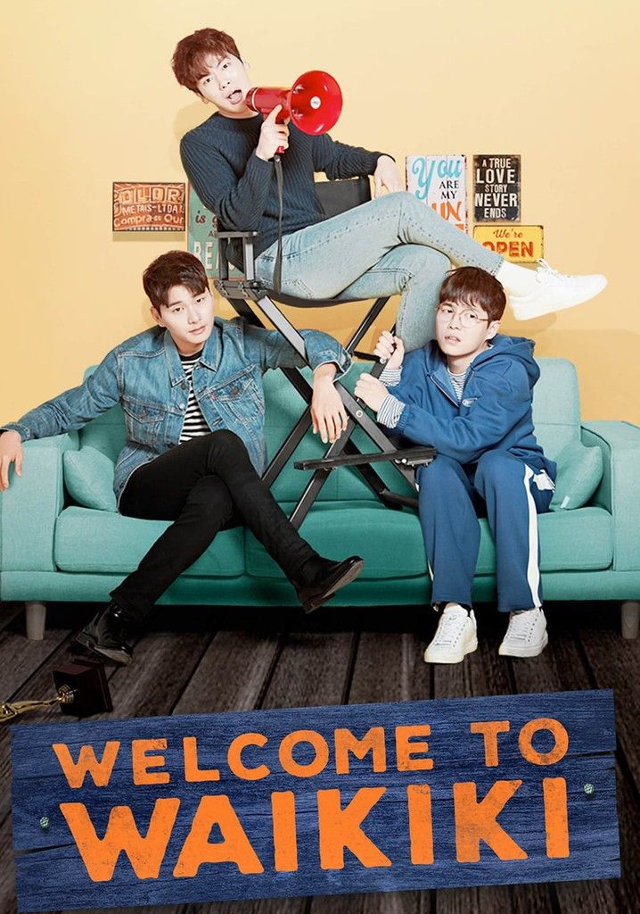


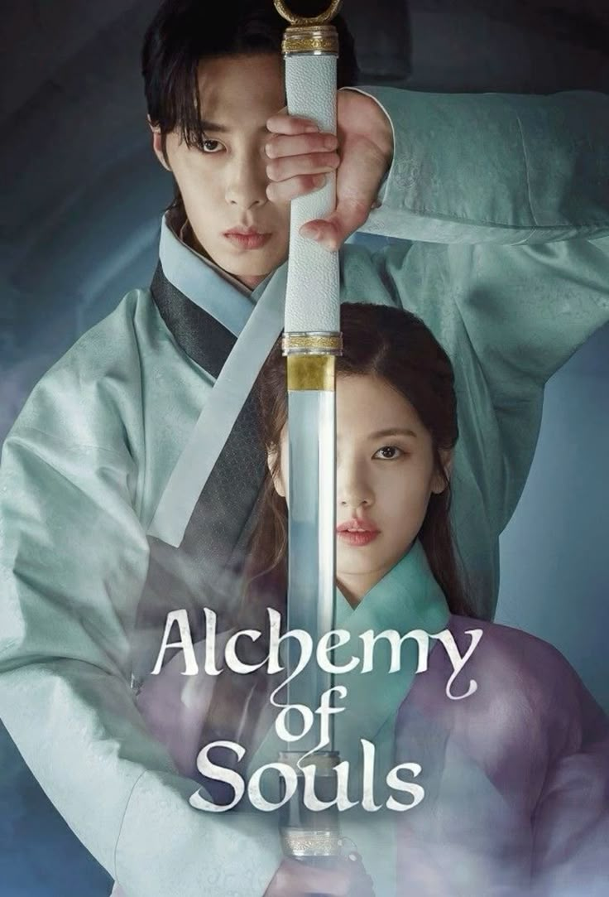
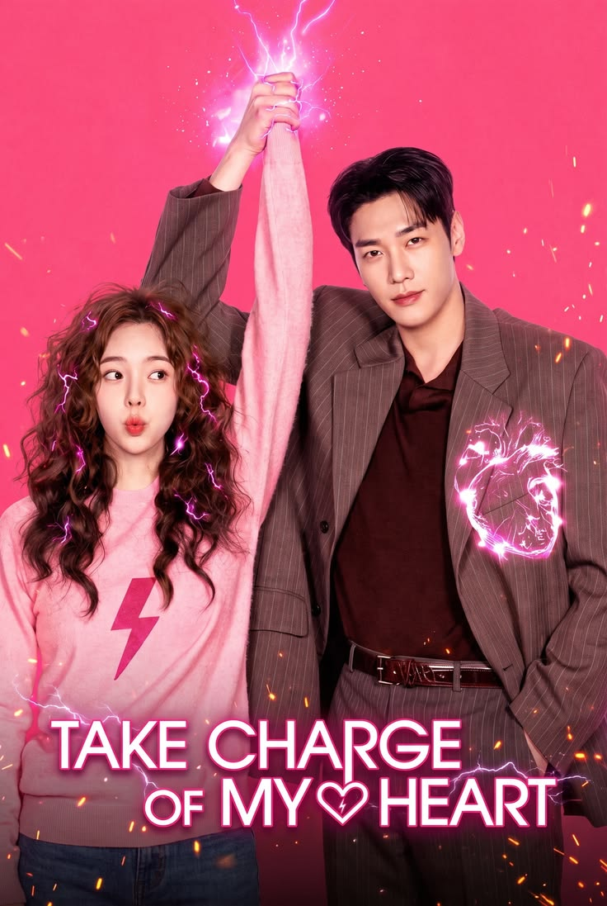
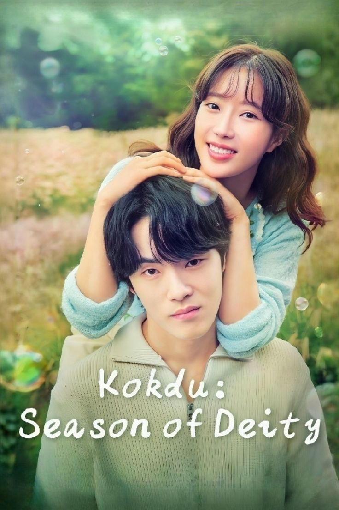
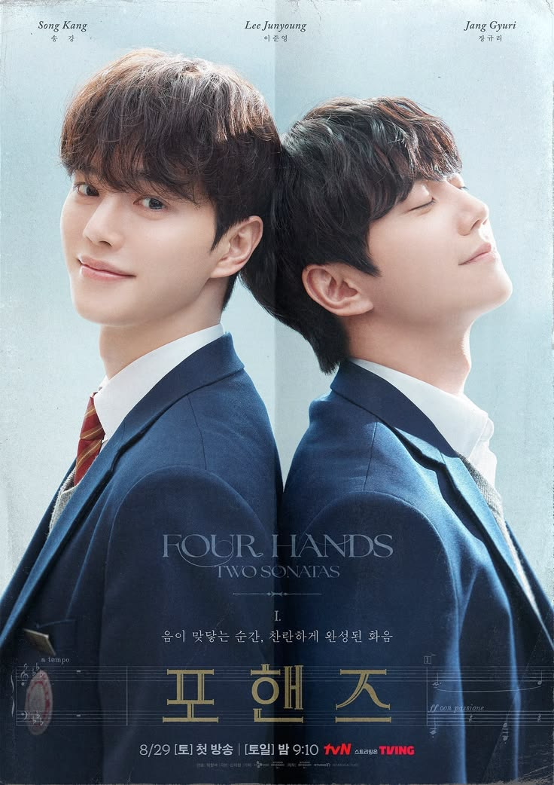
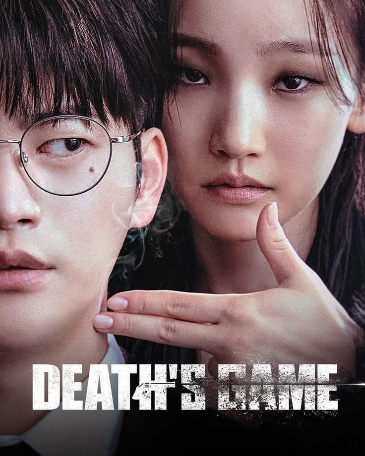
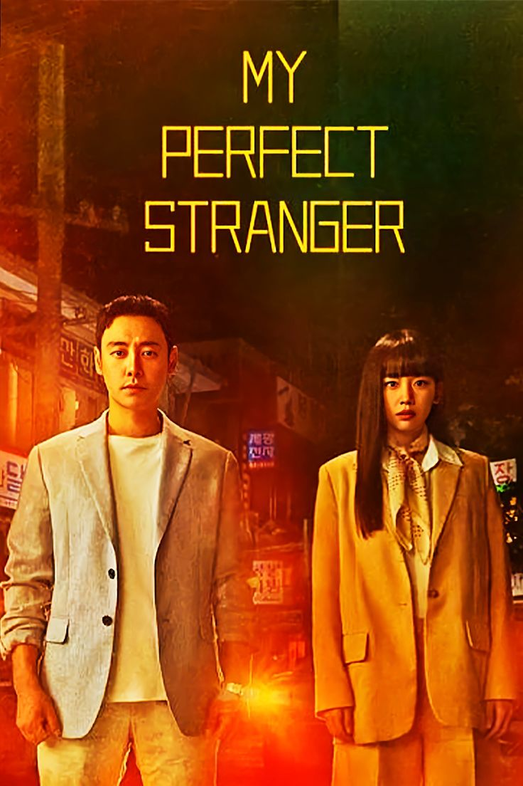
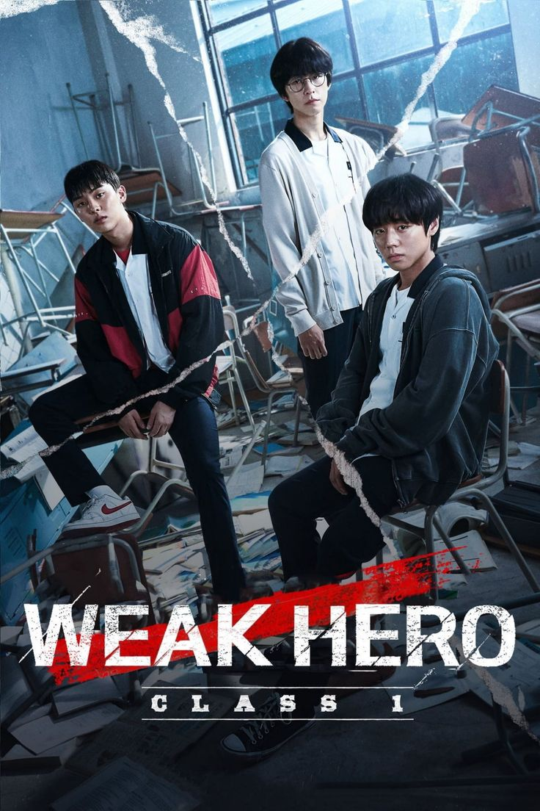
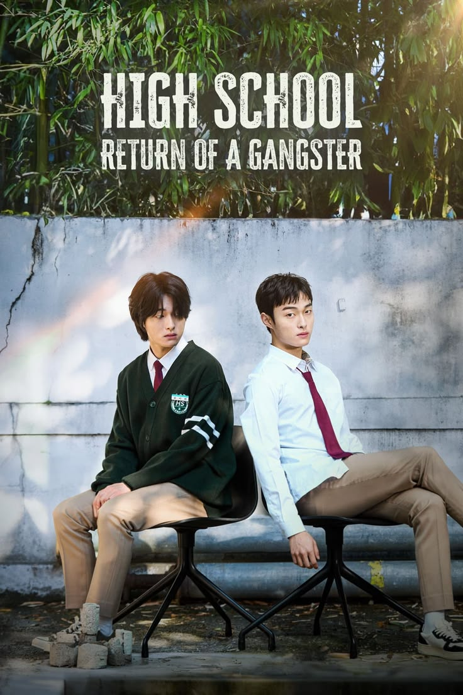
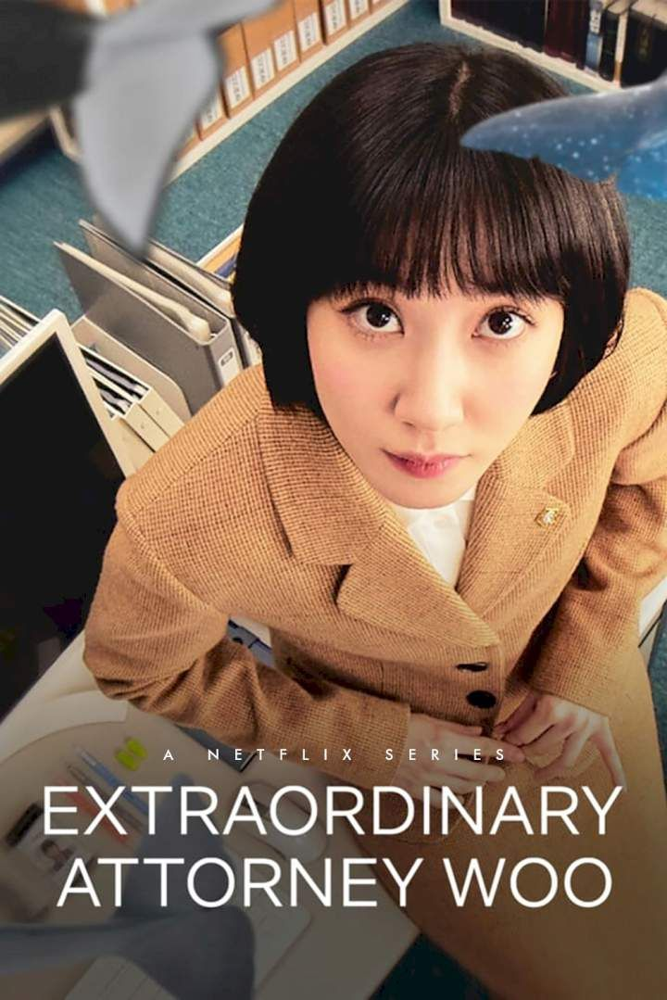
ARE YOU INTO KPOP TOO?
HEY, WHAT GROUP DO YOU STAN? WANNA KNOW MINE?
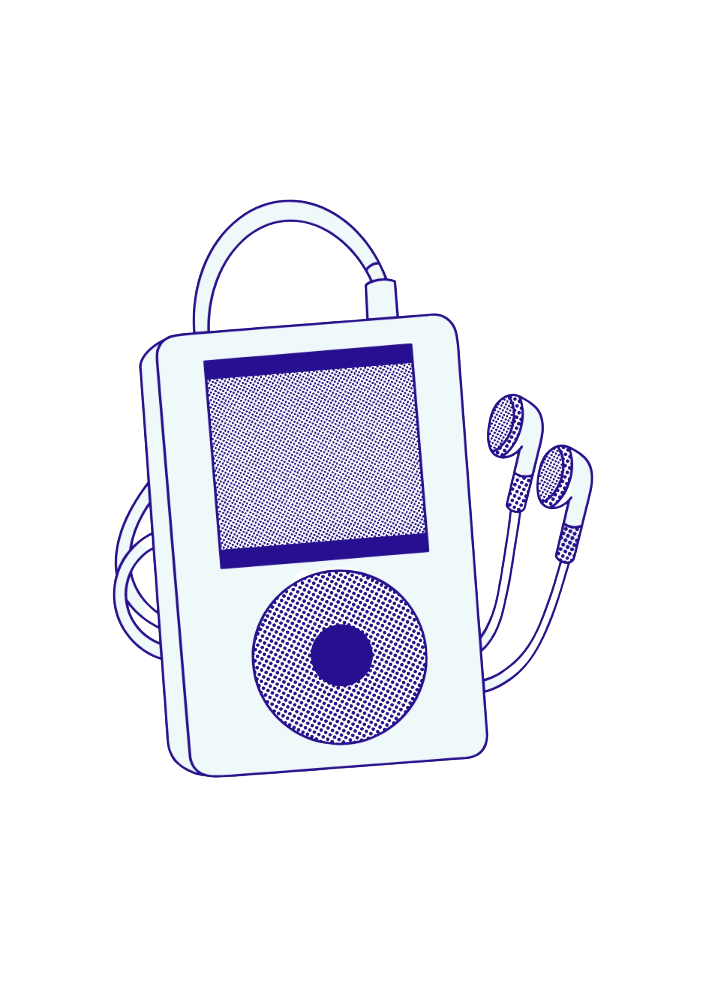
MY K-POP CORNER ♡
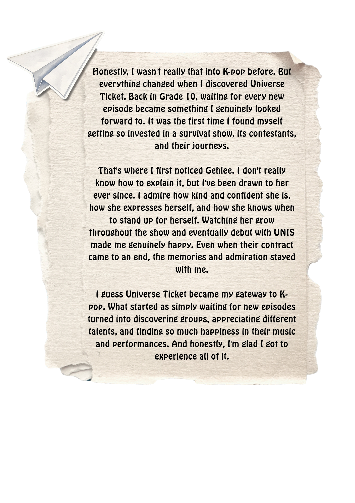
Let me introduce them to you why i stan them.
view why.
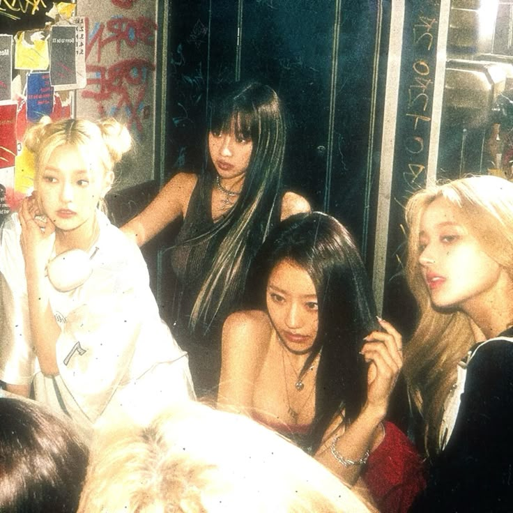
Kiss of Life
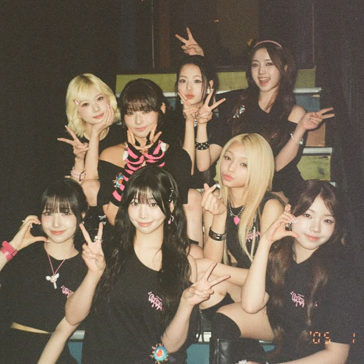
UNIS
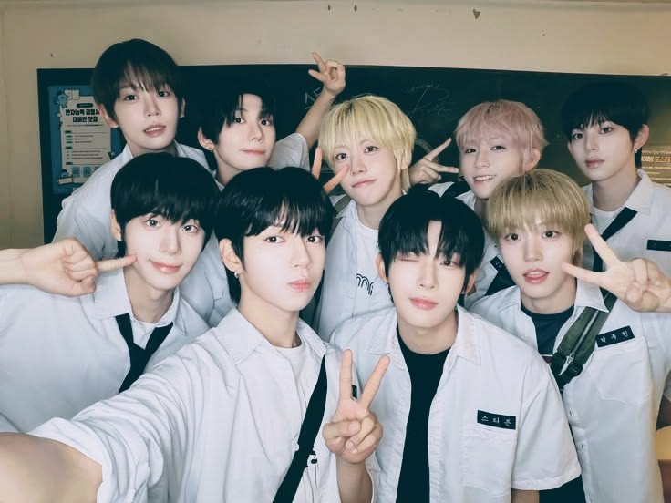
What's your say? 💬
Drop your thoughts, K-drama recos, or bias below!